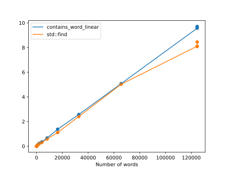

Searching shows up a lot in the real world: search engines, online dictionaries, databases, contacts apps, and at least N other things for all N > 0.
In most searching problems you have some key, such as a word, that you already have and you want to find some value, like the definition. In other searching problems you just have a key, such as a word, and you want to know if that key is in some big list of keys, like if you wanted to know if a word is an English word or if the word is in a list of banned words on a family friendly site.
To keep things simple, we'll just look at searching for a string in a vector<string>.
If you have a vector<string> with a list of words in it, think of the simplest way you'd search through it; that's linear search. Just look at each word, one at a time, and check that if that word is equal to the word you're looking for.
bool contains_word_linear(const vector<string>& words, const string& word) {
for (const auto& w : words) {
if (w == word) {
return true;
}
}
return false;
}
std::find, defined in the <algorithm> header is a more general version of linear search than contains_word_linear.
#include <algorithm>
#include <chrono>
#include <iostream>
#include <fstream>
#include <random>
#include <string>
#include <vector>
using std::cout;
using std::endl;
using std::ifstream;
using std::string;
using std::vector;
vector<string> read_lines(const string& filepath, const long max_lines=-1) {
ifstream f(filepath);
vector<string> lines;
for(string line; getline(f, line); ) {
lines.push_back(line);
if (max_lines > 0 && lines.size() >= max_lines) {
break;
}
}
return lines;
}
vector<string> get_random_words(const vector<string>& words, const int sample_size) {
std::default_random_engine dre;
std::uniform_int_distribution<int> uniform_dist(0, words.size() - 1);
vector<string> random_words;
for (int i = 0; i < sample_size; ++i) {
random_words.push_back(words[uniform_dist(dre)]);
}
return random_words;
}
bool contains_word_linear(const vector<string>& words, const string& word) {
for (const auto& w : words) {
if (w == word) {
return true;
}
}
return false;
}
// Returns the number of seconds to search for all `sample_words` in `words`.
double time_contains_word_linear(const vector<string>& words, const vector<string>& sample_words) {
auto start_time = std::chrono::steady_clock::now();
for (const string& w : sample_words) {
contains_word_linear(words, w);
}
auto end_time = std::chrono::steady_clock::now();
std::chrono::duration<double> elapsed_seconds = end_time - start_time;
return elapsed_seconds.count();
}
// Returns the number of seconds to search for all `sample_words` in `words`.
double time_std_find(const vector<string>& words, const vector<string>& sample_words) {
auto start_time = std::chrono::steady_clock::now();
for (const string& w : sample_words) {
std::find(words.begin(), words.end(), w);
}
auto end_time = std::chrono::steady_clock::now();
std::chrono::duration<double> elapsed_seconds = end_time - start_time;
return elapsed_seconds.count();
}
int main(int argc, const char* argv[]) {
const int sample_size = 10000;
const char* words_filename = argc > 1 ? argv[1] : "words.txt";
// Output a CSV that can be graphed.
cout << "\"Number of words\",contains_word_linear,std::find\n";
for (int n = 1; n < 1000000; n *= 2) {
vector<string> words = read_lines(words_filename, n);
vector<string> random_words = get_random_words(words, sample_size);
cout
<< words.size() << ","
<< time_contains_word_linear(words, random_words) << ","
<< time_std_find(words, random_words) << '\n';
}
return 0;
}$ clang++ -pedantic -Wall -lm -std=c++20 -o linear_search_timed linear_search_timed.cpp
$ ./linear_search_timed
"Number of words",contains_word_linear,std::find 1,0.00040474,0.000680062 2,0.000548312,0.000717836 4,0.00136528,0.00119692 8,0.0016382,0.00192569 16,0.00282858,0.00275254 32,0.00503286,0.00463127 64,0.0094111,0.00836115 128,0.0160842,0.0151356 256,0.0412392,0.0271632 512,0.0595178,0.0521641 1024,0.121562,0.105415 2048,0.228613,0.208701 4096,0.412007,0.277746 8192,0.766016,0.545758 16384,1.37781,1.09718 32768,2.57756,2.76103 65536,5.01857,5.48737 124536,9.48028,9.15306 124536,9.53389,8.234 124536,9.54554,8.13942

Linear search is linear in two ways: it searches through the elements one at a time (in a straight line, so-to-speak) and if you double the size of the input, it takes about twice as long.